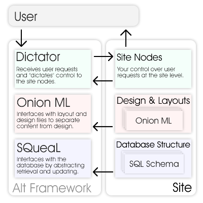

|
This page was written when the Alt Framework was still in the early design phases. It is intended as a guideline and introduction to what the Alt Framework could and should be. Project ProposalFirst off, thanks for browsing this web site. I will describe the Alt Framework, and with any luck, convince you that it is worth using. RationaleI started the Alt Framework after being grossly dissatisfied with existing web frameworks. Many recent frameworks seem to be designed to give instant results, but end up being both too simplistic and unnecessarily complex for serious projects. The frameworks also use languages such as Ruby and Python as a basis. I feel that they lack justification for requiring web administrators to install these frameworks. The Changing Web Application WorldIn just the past couple years, several technologies and concepts have exploded and become popular web design trends; namely content-presentation separation, and interactive AJAX/Web 2.0 applications. While neither concepts are new in the non-web programming world, few people had successfully integrated them into web programming. The challenge is to apply traditional programming patterns to the fast-changing world of web applications. Number 1 ProblemAfter not being convinced by the numerous new web frameworks I decided to approach the issues as an academic exercise. All of the issues seemed to stem from one main problem: repetition. In computer science they say that any time you copy and paste something, you need to look for a better approach. Any time you have something repeated in multiple places there is potential for a bug, so there is logic in repeating yourself as little as possible. To solve this problem, the Alt Framework has three interconnected solutions. Solution 1: Consolidate LanguagesWith web applications approaching client-server models, the need for shared code between client and server-side becomes more apparent. While client-side form validation creates a faster and better user experience, it is still necessary to validate the data on the server-side for security reasons. Solution? Use JavaScript as both the client-side and server-side programming language. Not only is JavaScript a very powerful object-oriented language, the appeal of using the same language for both the client and server side is hard to pass up. Web programmers generally need to have some understanding of JavaScript, so choosing a familiar language for server-side programming just makes sense. Solution 2: Data & Content OrganizationWeb programming (and almost any programming) is not limited to just the program code. For any project of reasonable magnitude, it is often beneficial to export certain components of a program to a data file. This is useful for internationalization, program layout, and any kind of interface design. I find that people are either for or against XML. One cannot deny that it provides a simple approach to organizing data, and its connections with HTML make it useful in web programming. As with JavaScript, most web programmers already need an understanding of XML. As a result, the Alt Framework uses XML as a basis for design and structure. Solution 3: ModularityModularity is a key requirement for elegant and easily maintained programs. It is important to not only modularize code, but data and design as well. PHP is an example of poor modularization. Not only is the function set spread out through a huge library of top-level methods, its file-based system does not encourage modular site design. Java is an example of good modularization. It has a hierarchal package system that is both used by its library and used by all but the simplest Java projects. The Alt Framework follows in the footsteps of Java, providing a hierarchal package system that is easy to use for small and large projects alike, while also making it easy to create extensions and libraries for projects based on the Alt Framework. Alt FrameworkThe Alt Framework is my attempt to address all of these issues with a succinct web framework. The Alt Framework is designed with the following principles:
With those three points, let me introduce the three components of the Alt Framework: SQueaL, Onion ML, and Dictator. Here is an overview of how these three modules work together:  The user requests a page, the dictator is in charge of parsing the URI and session information before calling a site node. The site node can then refer to SQueaL to retrieve information from the database, or update it, while using Onion ML to format content to send back to the user. A site structure (for a small or large project) is as follows:
These three systems work together to give you a complete functional web application framework. SQueaL, Onion ML, and DictatorYou can read more about each component by visiting its respective page: Author's BackgroundI am currently a student of Computer Science and have been developing web sites since 1996. Starting with no knowledge of HTML, scripting or programming languages, and I spent my time finding obnoxious JavaScripts on the Internet to make my Netscape Composer web pages more interesting. Since 1996, much of web development has changed. "Browser wars" dictated the platforms for the web, server-side programming and dynamics have become a norm. Along with the changes, I expanded my knowledge base, becoming fluent with HTML/XHTML, CSS, JavaScript, MySQL, PHP, and Java. Additionally I became familiar with popular applications such as Adobe Photoshop and Macromedia Dreamweaver/Fireworks, studying many aspects of user interface and web design. In 2002 I embarked on my largest web application project yet, 2draw.net, an online art community web site. This site was written entirely in PHP with a MySQL back end and quite poorly designed. In 2003 I rebuilt the web site, developing a series of PHP frameworks to simplify and structure the design process. The Alt Framework presents some of my latest work with web programming. |
|
| page last updated: Thursday, February 14, 2008 |